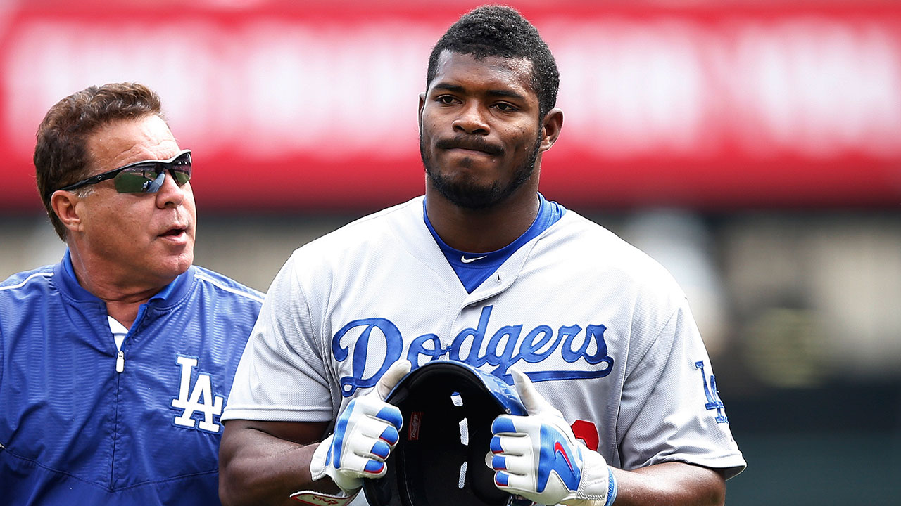

¿Dodgers Perdera a 1 cubano clave para la post temporada?

Don Mattingly calificó la recuperación del cubanoYasiel Puig como "milagrosa", pero el piloto de los Dodgers no se atrevió a decir si eso significa o no que el guardabosque estará en el roster de los azules para el inicio de la Serie Divisional de la Liga Nacional el próximo viernes.
Puig se ha estado rehabilitando en las instalaciones de Entrenamientos de Primavera del club en Arizona, participando en juegos esta semana. Mattingly dijo que Puig corría a un 80% y ahora está corriendo a un 100%. Sin embargo, ha patrullado las praderas en apenas un partido.
"Hace tres días, corría con dolores", señaló Mattingly. "Ahora está al 100% y se siente bien. Eso es una grata sorpresa. Para mí es algo milagroso. De un 80% al 100%. Es increíble".
El Puig de este a#l241;o ha sido muy diferente al sensacional novato del 2013 y al convocado al Juego de Estrellas en el 2014. Se perdió más de 80 encuentros debido a varios problemas en la corva izquierda y ha bateado .256 con .745 de OPS (porcentaje de embasarse más slugging. Dicho promedio es más de 100 puntos por debajo de su average de por vida al comenzar esta campaña.